|
| |||||||||||||
|
|
||
In the previous section, we used connectivity changes (i. e., critical points) to decompose the space into cells. The benefit of using the critical points is that the cells have a structure that is "easy" to cover. In this section, we use changes in line-of-sight related information to define cells. Such cells form visibility-based decompositions. Moving from one cell to another corresponds to a change in visibility, e. g., obstacle or target appears or disappears. We can use a visibility-based cell decomposition to address the pursuit/evasion problem. This problem, first introduced by Suzuki and Yamashita [403], considers one or more multiple agents called pursuers who are searching a bounded free space (usually polygonal) for a single agent called an evader. This evader can be a bad guy who is escaping the police or a trapped survivor wandering around a disaster site in need of help in searching rescue for workers. Lavalle, Guibas, and coworkers [172, 273] use a cell decomposition approach to address the pursuit/evasion problem. This decomposition lies in the workspace, not the configuration space, and the agents are points in the plane.
In this description, we borrow terminology and notation from [172, 273]. The evader e is caught when any one of the pursuers γi becomes within line of sight with it, i. e., there exists an i such that for all  . Let respectively be the paths that the evader and the ith pursuer follow. An evader is caught at the earliest time t when there exists an i such that for all 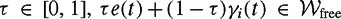. Let us recast the capture condition once more: let 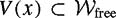 be the star-shaped set of points that are within line of sight of x (Figure 6.31). An evader is caught if there exists an i and t such that e(t) ∊ V (γi(t)). A motion strategy is the collection of the pursuer paths γ ={γ1, …, γn} and is termed a solution strategy if at least one pursuer catches the evader for all e(t). Finally, let 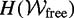 be the minimum number of pursuers required to capture an evader in in finite time.
. Let respectively be the paths that the evader and the ith pursuer follow. An evader is caught at the earliest time t when there exists an i such that for all 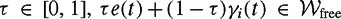. Let us recast the capture condition once more: let 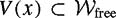 be the star-shaped set of points that are within line of sight of x (Figure 6.31). An evader is caught if there exists an i and t such that e(t) ∊ V (γi(t)). A motion strategy is the collection of the pursuer paths γ ={γ1, …, γn} and is termed a solution strategy if at least one pursuer catches the evader for all e(t). Finally, let 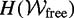 be the minimum number of pursuers required to capture an evader in in finite time.
We address the pursuit/evasion problem in two steps. Continuing to borrow terminology from [172,273], we will define qualitatively important subsets of the free space and then use these subsets to define the decomposition. A region of that may contain an evader is termed contaminated. If aregion is not contaminated, then it is clear. However, a region that was contaminated, then cleared, and contaminated again is termed recontaminated (Figure 6.32).
A visibility polygon now has two types of edges, those that lie on the boundary of obstacles and those that lie in the free space, which we call gap-edges. Gap-edges have a zero label if they bound a cleared region and a one if they bound a contaminated region (Figure 6.31).
Let B(x) denote a binary vector of these gap-edge labels for a particular starshaped set centered x. The pair (x, B(x)) denotes the information state and the set of all possible information states is the information space. A connected set 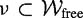 is conservative if for all x ∊ ν, B(x) remains fixed (Figure 6.33). Finally, we can construct an adjacency graph for the conservative regions in a given environment. Hence, the conservative regions form an exact cell decomposition. (Figure 6.34)
To construct the conservative regions for a polygonal environment, simply extend rays from each convex vertex of all of the obstacles until they intersect another obstacle. Also, if two vertices are within line of sight of each other, extend two rays, one from each vertex, but in the opposite directions. In other words, for 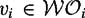 and 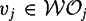, if 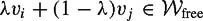 for all λ ∊ (−ε, 1 + ε) for some ε > 0, then extend a ray from νi away from νj and vice versa until they intersect an obstacle (Figure 6.35).
This process forms a cell decomposition of the free space where each cell is a conservative region. This cell decomposition, however, is not sufficient to solve the pursuit/evasion problem. We have to form a cell decomposition in the information space [172,273]. To do this, first identify all of the "transitions" that can occur when an agent passes from one conservative cell to another in the free space decomposition (Figure 6.36). If
a gap-edge disappears, do nothing;
two or more gap-edges merge into one, if any of them had a one label, assign a one to the new edge;
a gap-edge divides into multiple gap-edges, assign the new edges the same label as the original;
This transition information serves as a basis for an adjacency graph for a new decomposition. This graph, called the information graph, can be used to solve the pursuit/evasion problem. For each cell of the conservative region decomposition, we generate a sequence of nodes, each corresponding to a possible set of gap-edge labels. Figure 6.37 contains a simple free space with its adjacency graph overlaying on it. Consider the upper right conservative region. For all points in this region, it can only have one gap-edge which could have either a zero or a one label. Note that this gap-edge does not lie in the conservative region, i. e., it is not the horizontal line that separates the rightmost conservative regions.
Likewise, the conservative region in the lower-right cell has only one free edge. However, the transition from the upper-right cell to the lower-right cell is limited by the possible transition cases. In other words, if the upper-right cell has a B(x) = 1, then the lower-right cell must have B(x) = 1, and it cannot be zero. Therefore, the edges of the information graph represent the possible transitions from cell to cell (Figure 6.38).
For a single pursuer and single evader in simply-connected spaces, a planner can start from any node in the information graph and then search for a node that has B(x) = 0 (a vector of zeros). This determines a path through the conservative regions that is guaranteed to catch the pursuer (Figure 6.39).
Now, let's consider the number of pursuers required to find an evader. First, assume that 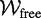 is a simply-connected polygon. Assume is partitioned into 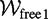 and 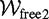 by connecting two vertices of the boundary of . Moreover, if , and 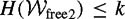, then 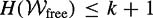, since 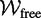 can be cleared by first clearing 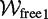 and 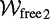 successively using the same k pursuers while keeping one pursuer, called the "static pursuer," at the common boundary between them.
Since a simply-connected polygon can be partitioned into two pieces such that each component has at least one third of the edges of the original polygon, a simply-connected polygon can be triangulated by recursively connecting two vertices, and the "depth" of such a triangulation is at most O(log n). Therefore the original polygon can be cleared by clearing each triangle using one pursuer while keeping O(log n) static pursuers at each "level." Thus, at most O(log n) pursuers are required to clear a simply-connected polygon (Figure 6.40).
Now consider a space with holes. Let h be the number of the holes of a free space , and assume that  is triangulated. Let a trichromatic triangle be the triangle that touches three distinct connected components of
is triangulated. Let a trichromatic triangle be the triangle that touches three distinct connected components of  . If all of the trichromatic triangles were removed, then
. If all of the trichromatic triangles were removed, then  would be divided into (disconnected) simply-connected regions. The number of the trichromatic triangles can be determined by forming a graph that has the following properties. The vertices of the graph correspond to the holes of the space, and two of the vertices are connected if there is a trichromatic triangle that touches the boundary of the two holes corresponding to these vertices. Since this graph is planar, it can be shown that the number of edges of this graph and therefore the number of the trichromatic triangles is O(h).
would be divided into (disconnected) simply-connected regions. The number of the trichromatic triangles can be determined by forming a graph that has the following properties. The vertices of the graph correspond to the holes of the space, and two of the vertices are connected if there is a trichromatic triangle that touches the boundary of the two holes corresponding to these vertices. Since this graph is planar, it can be shown that the number of edges of this graph and therefore the number of the trichromatic triangles is O(h).
Now consider the dual graph of the triangulation of  , but actually consider only the vertices corresponding to the trichromatic triangles. Note that each edge of this graph corresponds to a simply-connected region of , which can be cleared using O(log n) pursuers using the result above. This graph can be partitioned using O(√h) edges into two components so that each component has at least one third of the edges. The O(√h) "static" pursuers are placed on the edges that partition the graph. Recursively applying the planar graph separator theorem, and placing static pursuers accordingly (thus total number of static pursuer is 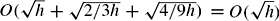, a simply-connected region (i. e., an edge of the dual graph) can be isolated. Since a simply-connected region can be cleared using O(log n) pursuers, the complete region can be cleared using O(√h + log n) pursuers (Figure 6.41).
, but actually consider only the vertices corresponding to the trichromatic triangles. Note that each edge of this graph corresponds to a simply-connected region of , which can be cleared using O(log n) pursuers using the result above. This graph can be partitioned using O(√h) edges into two components so that each component has at least one third of the edges. The O(√h) "static" pursuers are placed on the edges that partition the graph. Recursively applying the planar graph separator theorem, and placing static pursuers accordingly (thus total number of static pursuer is 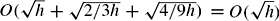, a simply-connected region (i. e., an edge of the dual graph) can be isolated. Since a simply-connected region can be cleared using O(log n) pursuers, the complete region can be cleared using O(√h + log n) pursuers (Figure 6.41).
|
|
||
|